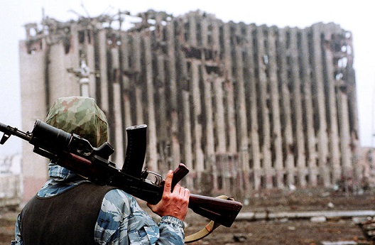
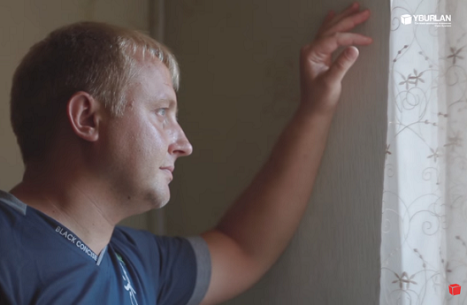

-
 Обыкновенный Донбасс 5 историй: Радуга за битым стеклом
Обыкновенный Донбасс 5 историй: Радуга за битым стеклом
Каждая история уникальна. Улыбка радости и облегчения объединяет эти истории. Сотни жителей Донбасса и беженцев из региона прошли бесплатный тренинг Юрия Бурлана и получили психологическую поддержку для снятия стресса войны. Донбасс, можно жить!...
Смотреть видео -

Ушел страх перед накатывающимися воспоминаниями
Ушли частые головные боли, перестала болеть сорванная в армии спина. Теперь просто ЗАХОТЕЛОСЬ ЖИТЬ, НАСЛАЖДАТЬСЯ КАЖДЫМ ДНЕМ.
Виктор Егоркин Читать -
 Донбасс. Новые смыслы в условиях войны
Донбасс. Новые смыслы в условиях войны
Как можно жить дальше после потери дорогих сердцу людей? Это кажется невозможным... После тренинга это уже не беспросветная тоска, из-за которой ты не видишь смысла жить. Грусть перешла в светлое чувство, я могу жить дальше. Появляется твердая уверенность в будущем. И это мне дал тренинг.
Ольга Ермаковаэкономист Смотреть видео -
 Появилась та самая стрессоустойчивость, о которой мечтала. Ушли панические атаки
Появилась та самая стрессоустойчивость, о которой мечтала. Ушли панические атаки
Самый яркий результат – с момента прохождения тренинга не было ни одной панической атаки. Также нормализовался сон, ушли мигрени. Результатов очень много. Но главное – появилась некая внутренняя уверенность, спокойней стала относиться ко всему происходящему. Даже дальнейшие планы появились, не смотря на нестабильность. Появилось желание жить!
Читать Ольга Плахотяучитель математики и информатики -
Сегодня я полностью спокойна. Мне не страшно жить
У меня нет паники, когда я слышу грохот орудий. Я чётко знаю что надо делать. Я помогаю тем, кому нужна моя помощь и понимаю,что другой жизни у меня не будет. И если мне пришлось жить в такое сложное время - значит надо жить. Радоваться тем маленьким радостям, которые выпадают на мою жизнь...
Читать Валентина П, Донецкэкономист -
 Знания СВП дали и мне и дочери мощную поддержку, ощущение защиты…
Знания СВП дали и мне и дочери мощную поддержку, ощущение защиты…
Сплошная неопределенность, сложная и непредсказуемая обстановка в регионе, военные действия – такой период в жизни достаточно сильное испытание для взрослого человека, а что говорить о маленьком ребенке?!
Марина П, Донецк Читать -
 Понимание происходящего помогает в условиях обстрелов осознанно принимать решения и оказывать помощь
Понимание происходящего помогает в условиях обстрелов осознанно принимать решения и оказывать помощь
Во время оказания неотложной медицинской помощи и эвакуации раненных, приходилось находиться в разных условиях под обстрелом и люди вели себя по разному в одних и тех же условиях.
Юрий Д, Стаханов Читать -
 Это возможность спасти свою жизнь, не запаниковав в опасной ситуации
Это возможность спасти свою жизнь, не запаниковав в опасной ситуации
Возможность пройти бесплатно тренинг в условиях войны – для некоторых это просто возможность спасти свою жизнь, не запаниковав в опасной ситуации, для других – сохранить здоровье и возможность полноценно жить...
Светлана С, Молодогвардейск Читать -

Донбасс. И всё-таки есть выход
Страхи, которые я переживал до прохождения тренинга, и то, как я себя ощущаю сейчас, это два разных человека. Паника больше не забивает мне разум, я четко знаю, что делать, чтобы спасти своего ребенка. Для жителей Донбасса Юрий Бурлан предлагает психологическую поддержку бесплатно, это помогает снять все стрессы, получить заряд жизни и желание жить.
Константин Пижукпредприниматель Смотреть видео -
 Донбасс. Здесь поют птицы
Донбасс. Здесь поют птицы
Тренинг кардинально меняет жизнь, помогая найти выход из самых, казалось бы, неразрешимых проблем, преодолеть чувство одиночества, обиды, недопонимания, найти общий язык с близкими людьми и даже теми, кого мы видим впервые. Даже в условиях войны он делает человека счастливым.
Елена Щербаковаэкономист Смотреть видео -
 Самым главным своим результатом считаю обретение внутреннего спокойствия
Самым главным своим результатом считаю обретение внутреннего спокойствия
Это не приходит в один день, но за месяц тренинга я чувствую, что изменилась сама и мои близкие почувствовали уверенность и защищенность, поверили в свои силы двигаться дальше
Вита Г, Мариуполь Читать -
Появилась просто колоссальная стрессоустойчивость
Никто не думал, что на наши плечи свалится такое горе, которое называется война…И до последнего ни я, ни самые родные и близкие люди не думали, что будут бомбить наш любимый, родной и красивый город Донецк. Но увы так и произошло...Когда началась война я провалилась в огромное количество страхов. Потом еще хуже, у меня начались панические атаки. Как вообще из этого водоворота выбраться, я даже приблизительно не знала. Сейчас я осознала, что вообще такое страх и откуда он берется и все это постепенно начинает уходить.
Читать Татьяна Т, Донецк -
Я снова сплю ночами, даже под звуки взрывов
Панические атаки... Что это такое, я узнала с войной. От каждого взрыва я просыпалась в панике. Нервы, как натянутая струна. Живешь просто из упрямства. Домашние как спички, все проблемы в семье, которые вроде и были, но как-то все уже к ним привыкли, вдруг взорвались и стали невыносимыми. Постоянная ругань. Казалось выхода нет. Потом подруга рассказала о тренинге...Не верилось особо, что будут какие-то там прям результаты. А оказалось все совсем по-другому. Панических атак больше нет. а попутно со снятием стресса войны разрешились ситуации в семье, которые не получали разрешения годами.
Читать Наталья А, Донецк -
 Была в жутком состоянии - нервы уже сдавали...
Была в жутком состоянии - нервы уже сдавали...
На тренинге с каждым новым занятием, снова просыпалось желание жить, это происходило так незаметно и легко, что даже не поняла когда полностью избавилась от всего плохого, казалось что я всегда была такой- веселой и беззаботной
Любовь В, Донецк Читать -
 Стрессоустойчивость повысилась не только у меня, но и у моего сына
Стрессоустойчивость повысилась не только у меня, но и у моего сына
Изменилось внутреннее состояние, пришло какое-то успокоение. Каждый тренинг ждала с нетерпением, и всегда, как глоток свежего воздуха - рассказы Юрия об Украине, обнадёживающие слова, огромная поддержка!
Анна Ч, Мариуполь Читать -
 Уходит боль, страх и скорбь, уже получается дышать полной грудью
Уходит боль, страх и скорбь, уже получается дышать полной грудью
Это мои результаты, которые позволяют мне теперь спать и улыбаться, обнимать детей и родителей, любить жену и всех людей....
Сергей П, Северодонецк Читать -
Неприятности не выбивают меня из привычного образа жизни на долгое время
Я живу в районе, который относится к относительно безопасным, т.е. обстрелов там было мало, и, конечно, моё состояние нельзя сравнивать с состоянием тех людей, который живут на окраине города. И, тем не менее, стресс войны переживают все его жители, и я в том числе. Неопределенность, рухнувшие планы, разлука с близкими, переживания за них и за их переживания за нас с мужем. После тренинга стрессоустойчивость не возросла, а она появилась. Постоянно в ровном настроении. Нет тревог, страха, обид, грусти.
Читать Набия Ш, Донецк -
Панические атаки мои ушли
Мне было больно, когда самолёты летели над моей головой в Славянск. Меня сжимало всю от страха, злости и ненависти. Мне было больно, когда самолёт бомбил Луганск...Мне было больно, когда вошли в мой посёлок . Всю ночь гудела техника и рано утром я впервые в своей жизни услышала звук вылетающих снарядов "Града" по городу Дебальцево!...Мне больно, что телевидение говорит одно, а я здесь и сейчас вижу иное...22 января 2015 года и мой поселок подвергся обстрелу... Я уже пережила страх не только за людей, но и страх за жизнь моих родных, и страх за свою жизнь.... Здесь моя психика сдалась и я узнала, что такое панические атаки.....
Читать Елена В, Славянск -
Всё стало понятным, а не размыто-пугающим!
После войны на Донбассе в 2014 многое изменилась. В самом начале казалось, что если все родные живы и здоровы, то важнее и быть ничего не может. Но время шло и стала замечать за собой странные вещи, которых раньше не было. В первую очередь раздражительность и состояние неуверенности... Изменения восприятия реальности у меня начались еще после первоначальном знакомстве с системным мышлением...Именно легко и свободно всё стало вокруг! Есть конкретные знания которые мягко, но конкретно дают подсознательную подсказку на любой случай! Ты защищён и расслаблен!
Читать Наталья Б, Луганск -
Мне хочется жить! Я вижу новые перспективы!
За последние 4 года моя жизнь очень изменилась в худшую сторону. Это связано с военными событиями в Луганске (в Донбассе). Я жила последние 4 года в состоянии депрессии, вокруг такие же люди ... Мне казалось, что все потеряно и все утратило смысл ... РЕЗУЛЬТАТ: ситуация в Луганске не изменилась, но изменилось мое отношение к ней. Я смогла справиться с депрессией. Теперь мне хочется жить! Я вижу новые перспективы! У меня много планов на будущее. Я поняла, что моя жизнь не заканчивается, а только начинается!!!
Читать Виктория А, Луганск -
 Как начать жить заново?
Как начать жить заново?
Началась война. Я не знала, наступит ли «завтра». Потеряла любимую работу, а вместе с ней и возможность приобретения жилья и обучения сына. Осталась одна безо всякой поддержки. Тяжело это вспоминать…
Лилия М, Луганскэкономист Смотреть видео -
 От беспомощности, от бессилия, от страха не знала куда себя деть
От беспомощности, от бессилия, от страха не знала куда себя деть
Даже после 3 бесплатных тренингов почувствовала небывалый прилив сил, энергии и в тоже время внутреннего спокойствия. И понимание ситуации.
Ирина К, Луганск Читать -
 Если понимать что ты не один, ты становишься сильнее
Если понимать что ты не один, ты становишься сильнее
После прохождения тренинга ты начинаешь четко и безошибочно принимать решения, учишься брать ответственность на себя. И все это со 100% пониманием себя и людей.
Оксана Е, Донецк Читать -
 Реагируешь на происходящее взвешенно и адекватно ситуации
Реагируешь на происходящее взвешенно и адекватно ситуации
И могу сказать, что пришло новое чувство любви и гордости за свою Родину! Как бы не уговаривали меня переехать в «безопасное место» - точно знаю внутри - я останусь здесь!
Оксана Л, Донецк Читать -
 После тренинга появились силы
После тренинга появились силы
После тренинга появились силы не только самой справляться с постоянным стрессом, но и оказывать моральную поддержку окружающим людям.
Анна К, Донецк Читать -
 Такое ощущение, что моя стрессоустойчивость достигла 100%!
Такое ощущение, что моя стрессоустойчивость достигла 100%!
В результате прохождения тренинга ушли все мои тревожные состояния, особенно связанные с военными действиями на Донбассе.
Римма К, Краматорск Читать -
 Ты становишься способным адаптировать ситуацию, даже самую тяжёлую как стресс войны
Ты становишься способным адаптировать ситуацию, даже самую тяжёлую как стресс войны
Благодаря тренингу, всё каким-то образом стало проясняться: упорядочились мысли, и я смогла разобраться в своих внутренних ощущениях.
Екатерина Т, Луганск Читать -
 Паника, страхи и волнения окружающих перестали влиять на меня
Паника, страхи и волнения окружающих перестали влиять на меня
Мир изменился, точнее у меня изменился взгляд на него и я теперь смотрю на людей, события, обстоятельства по другому
Анатолий С, Макеевка Читать -
Видеть САМОМУ - это единственный шанс получить пожизненную прививку от ЛЖИ всех этих СМИ
Информационные войны заставили в одно время даже сомневаться меня, но Я остался непоколебимым, и в этом то же заслуга этого курса
Дмитрий А, Ясиноватая Читать -
 У меня есть силы не просто смотреть трудностям в лицо, но и справляться с ними
У меня есть силы не просто смотреть трудностям в лицо, но и справляться с ними
Когда я попала на тренинг к Юрию Бурлану, от меня осталась функционирующая в бытовых вопросах оболочка с выжженной землёй внутри
Елена М, Донецк Читать
Уже 25888результатов
оставили более
20500 человек
оставили более
20500 человек
Результаты прошедших тренинг
393 результата
393
результата
Показать еще
19
декабря